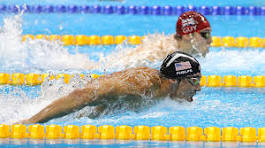
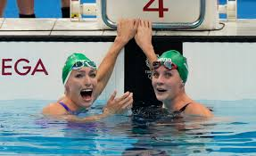

swimming, in recreation and sports, the propulsion of the body through water by combined arm and leg motions and the natural flotation of the body. Swimming as an exercise is popular as an all-around body developer and is particularly useful in therapy and as exercise for physically handicapped persons. It is also taught for lifesaving purposes. Moreover, swimming is practiced as a competitive sport and is one of the top audience draws at the Olympic Games. For activities that involve swimming, see also diving, lifesaving, surfing, artistic swimming, underwater diving, and water polo.


History
Archaeological and other evidence shows swimming to have been practiced as early as 2500 bce in Egypt and thereafter in Assyrian, Greek, and Roman civilizations. In Greece and Rome swimming was a part of martial training and was, with the alphabet, also part of elementary education for males. In East Asia swimming dates back at least to the 1st century bce, there being some evidence of swimming races then in Japan. By the 17th century an imperial edict had made the teaching of swimming compulsory in the schools. Organized swimming events were held in the 19th century before Japan was opened to the Western world. Among the preliterate maritime peoples of the Pacific, swimming was evidently learned by children about the time they walked, or even before. Among the ancient Greeks there is note of occasional races, and a famous boxer swam as part of his training. The Romans built swimming pools, distinct from their baths. In the 1st century bce the Roman Gaius Maecenas is said to have built the first heated swimming pool.
The lack of swimming in Europe during the Middle Ages is explained by some authorities as having been caused by a fear that swimming spread infection and caused epidemics. There is some evidence of swimming at seashore resorts of Great Britain in the late 17th century, evidently in conjunction with water therapy. Not until the 19th century, however, did the popularity of swimming as both recreation and sport begin in earnest. When the first swimming organization was formed there in 1837, London had six indoor pools with diving boards. The first swimming championship was a 440-yard (400-meter) race, held in Australia in 1846 and annually thereafter. The Metropolitan Swimming Clubs of London, founded in 1869, ultimately became the Amateur Swimming Association, the governing body of British amateur swimming.


 Go To Back
Go To Back